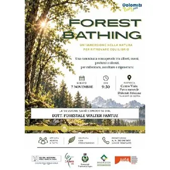

sab 7 nov · dalle 09:30
Forest Bathing a Tramonti di Sopra con Dott. Forestale Walter Fantuz
𝙐𝙣’𝙞𝙢𝙢𝙚𝙧𝙨𝙞𝙤𝙣𝙚 𝙣𝙚𝙡𝙡𝙖 𝙣𝙖𝙩𝙪𝙧𝙖 𝙥𝙚𝙧 𝙧𝙞𝙩𝙧𝙤𝙫𝙖𝙧𝙚 𝙚𝙦𝙪𝙞𝙡𝙞𝙗𝙧𝙞𝙤 Una camminata consapevole tra alberi, suoni, profumi e silenzi, per rallentare, ascoltare e rigenerarsi. La sessione sarà condotta dal 𝗗𝗼𝘁𝘁. 𝗙𝗼𝗿𝗲𝘀𝘁𝗮𝗹𝗲 𝗪𝗮𝗹𝘁𝗲𝗿 𝗙𝗮𝗻𝘁𝘂𝘇. Partenza dal Centro Visite del Parco naturale Dolomiti…
 Indicazioni
Indicazioni
- Costi e prenotazioni
- Costo non indicato · Prenotazione non indicata
- Programma
- Programma da verificare. Apri la fonte ufficiale per orari e possibili aggiornamenti.
- In caso di maltempo
- Nessuna indicazione specifica pubblicata.
- Note
- Acquisito automaticamente dalla fonte.
L’EVENTO
Descrizione completa
𝙐𝙣’𝙞𝙢𝙢𝙚𝙧𝙨𝙞𝙤𝙣𝙚 𝙣𝙚𝙡𝙡𝙖 𝙣𝙖𝙩𝙪𝙧𝙖 𝙥𝙚𝙧 𝙧𝙞𝙩𝙧𝙤𝙫𝙖𝙧𝙚 𝙚𝙦𝙪𝙞𝙡𝙞𝙗𝙧𝙞𝙤
Una camminata consapevole tra alberi, suoni, profumi e silenzi, per rallentare, ascoltare e rigenerarsi. La sessione sarà condotta dal 𝗗𝗼𝘁𝘁. 𝗙𝗼𝗿𝗲𝘀𝘁𝗮𝗹𝗲 𝗪𝗮𝗹𝘁𝗲𝗿 𝗙𝗮𝗻𝘁𝘂𝘇.
Partenza dal Centro Visite del Parco naturale Dolomiti Friulane, Tramonti di Sopra
𝗦𝗮𝗯𝗮𝘁𝗼 𝟳 𝗻𝗼𝘃𝗲𝗺𝗯𝗿𝗲, 𝗼𝗿𝗲 𝟵.𝟯𝟬
Attività adatta a tutti, gratuita con prenotazione .
Prenotazioni al numero 342 0473455 (anche WhatsApp)
Organizzazione a cura di 𝗖𝗮𝗺𝗶𝗹𝗹𝗮 𝗖𝗼𝘀𝘁𝗮.
Basta un passo alla volta.
𝗥𝗲𝗴𝗶𝗼𝗻𝗲 𝗔𝘂𝘁𝗼𝗻𝗼𝗺𝗮 𝗙𝗿𝗶𝘂𝗹𝗶 𝗩𝗲𝗻𝗲𝘇𝗶𝗮 𝗚𝗶𝘂𝗹𝗶𝗮
𝗘𝗰𝗼𝗺𝘂𝘀𝗲𝗼 𝗟𝗶𝘀 𝗔𝗴𝗮𝗻𝗶𝘀 𝗔𝗣𝗦
𝗖𝗼𝗺𝘂𝗻𝗲 𝗱𝗶 𝗧𝗿𝗮𝗺𝗼𝗻𝘁𝗶 𝗱𝗶 𝗦𝗼𝗽𝗿𝗮
𝗠𝗮𝗴𝗻𝗶𝗳𝗶𝗰𝗮 𝗖𝗼𝗺𝘂𝗻𝗶𝘁𝗮̀ 𝗱𝗶 𝗠𝗼𝗻𝘁𝗮𝗴𝗻𝗮
𝗗𝗼𝗹𝗼𝗺𝗶𝘁𝗶 𝗨𝗡𝗘𝗦𝗖𝗢
𝗗𝗼𝗹𝗼𝗺𝗶𝘁𝗶 𝗗𝗮𝘆𝘀 𝟮𝟬𝟮𝟲
IL PROGRAMMA
Programma e orari
Appuntamenti raccolti dalle fonti elencate. Dove manca un orario, non è ancora disponibile in questa scheda.
Programma pubblicato
- Dal 2026-11-07 al 2026-11-07
INFORMAZIONI UTILI
Prima di partire
- Controllare la fonte prima di partire.
ORGANIZZAZIONE